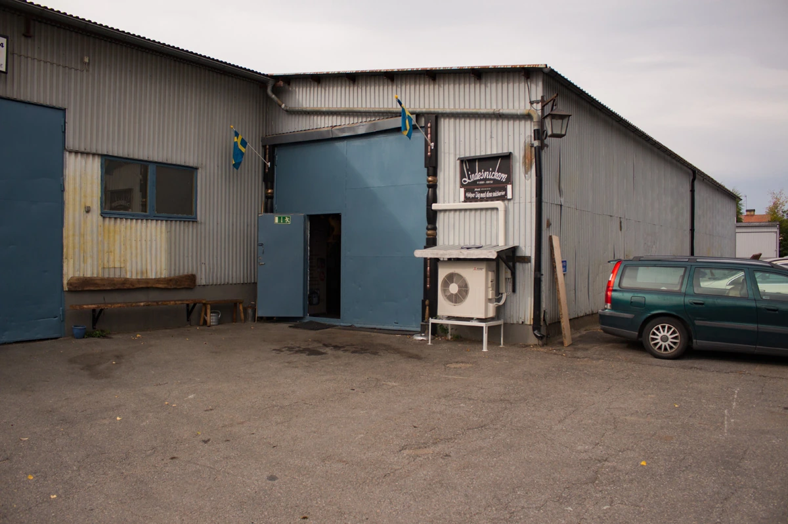

Vi börjar
med en idé.
Ring Kenneth eller berätta lite om vad du vill skapa, ändra eller bevara.
- Mobiltelefon
- 070-444 25 98
- Verkstaden
- 0581-100 52
- Mejla Kenneth
- kenneth.andersson@lindesnickarn.se
- Besöksadress
- Skogstorpsvägen 3
711 34 Lindesberg
Telefon vardagar 07.00–16.00.
Ring gärna innan du besöker verkstaden.

Vad har du i tankarna?
Förbered ett mejl till Kenneth. Mått, bilder och en enkel beskrivning är en bra början.